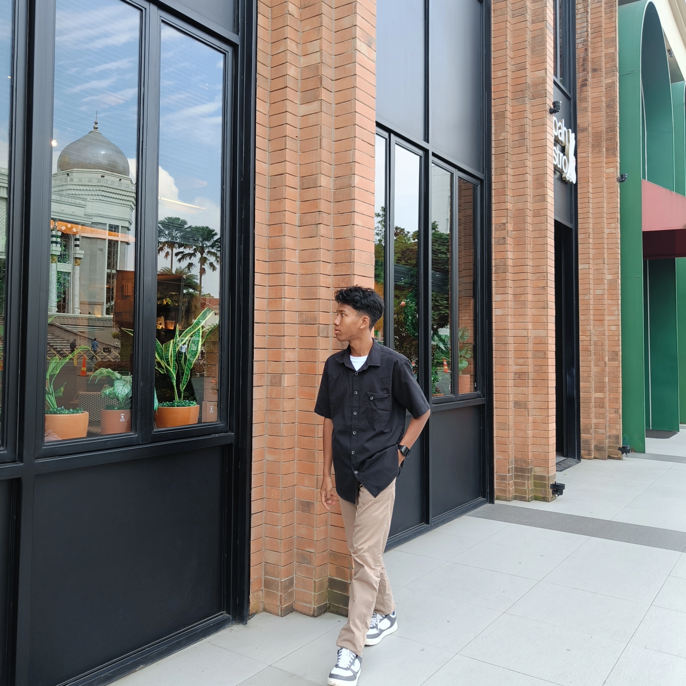

Saya Siswa SMK Telkom Purwokerto dengan jurusan Rekayasa Perangkat Lunak (RPL) dengan keahlian di bidang Desain Grafis, UI/UX, Dan Frontend. Saya mampu membuat website menggunakan bahasa pemrograman JS, PHP, MYSQL.

Saya Siswa SMK Telkom Purwokerto dengan jurusan Rekayasa Perangkat Lunak (RPL) dengan keahlian di bidang Desain Grafis, UI/UX, Dan Frontend. Saya mampu membuat website menggunakan bahasa pemrograman JS, PHP, MYSQL.
Hai! Saya Arya Teguh Bagus Prayoga. Saya Seorang pelajar Pelajar Smk Telkom Purwokerto dengan jurusan Rekayasa Perangkat Lunak (RPL). Saya memiliki pengalaman 1 tahun, dengan spesialisasi dalam pengembangan website menggunakan pemrograman dasar dan pengalaman Design UI/UX.
Dengan pengalaman di bidang Frontend Development dan UI/UX Design, saya suka menciptakan tampilan modern, interaktif, dan responsif yang memberikan pengalaman pengguna terbaik.
Saya juga memiliki minat besar pada animasi web dan desain minimalis , untuk menghadirkan hasil yang elegan dan profesional.
Website toko online sederhana responsif menggunakan PHP dan MySQL, untuk memudahkan pengguna mencari alat perkakas yang di butuhkan.
Lihat hasil
Website Lowongan pekerjaan untuk memudahkan masyarakat menemukan pekerjaan yang di inginkan dan untuk mengurangi angka pengangguran.
Lihat hasil
Desain aplikasi mobile berbasis Figma yang bertema pemilahan sampah. tujuannya untuk membangun budaya peduli lingkungan di masyarakat yang mampu mengubah sampah menjadi aset bernilai.
Lihat desainTertarik bekerja sama atau sekadar menyapa? Kirim pesan kepada saya di bawah ini!